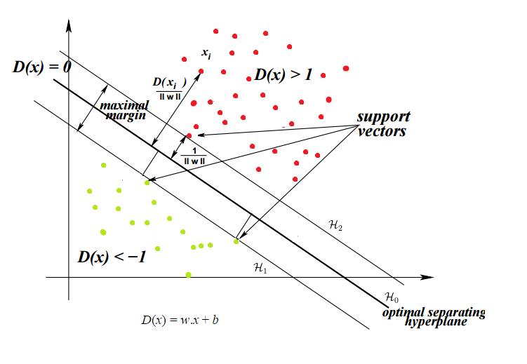

Theory#
Support Vector Machines are often used for binary classfication problems. The algorithm looks for the optimal boundary to separate the data and determines the boundary based on the “support vectors”, the points that lie closest to the decision bounadry (hyperplanes in multiple dimensions).
See: https://web.mit.edu/6.034/wwwbob/svm.pdf
and https://www.cs.cmu.edu/~aarti/Class/10315_Fall20/lecs/svm_dual_kernel.pdf
Show code cell content
from sklearn.datasets import make_blobs
import pandas as pd
import numpy as np
import matplotlib.pyplot as plt
import seaborn as sns
sns.set(rc={'figure.figsize':(11.7,8.27)})
centers = [(-3, -3), (2, 2)]
cluster_std = [1, 1]
X, y = make_blobs(
n_samples=500,
cluster_std = cluster_std,
centers = centers,
n_features = 2,
random_state=2
)
Intro#
Start with a classification scenario with perfect and linear separation, as in the example below. I draw three different possible candidates to use as the decision boundary.
scatter = sns.scatterplot(X[:,0], X[:,1], hue=y, palette="tab10")
scatter.plot([-6,4], [5,-4], '-', color="red", linewidth = 2)
scatter.plot([-6,3], [6,-4], '-', color="red", linewidth = 2)
scatter.plot([-6,5], [4,-4], '-', color="red", linewidth = 2)
/home/chansoo/projects/statsbook/.venv/lib/python3.8/site-packages/seaborn/_decorators.py:36: FutureWarning: Pass the following variables as keyword args: x, y. From version 0.12, the only valid positional argument will be `data`, and passing other arguments without an explicit keyword will result in an error or misinterpretation.
warnings.warn(
[<matplotlib.lines.Line2D at 0x7fef162b2040>]
Picking just one line as an example, we can find the points that lie closest to this arbitrary line.
p1 = np.array([-6,3.5])
p2 = np.array([6,-5.2])
dists = []
for p3 in X:
dists.append(np.linalg.norm(np.cross(p1-p3,p2-p1))/np.linalg.norm(p2-p1))
k=4
scatter = sns.scatterplot(X[:,0], X[:,1], hue=y, palette="tab10")
scatter.plot([-6,6], [3.5,-5.2], '-', color="red", linewidth = 2)
supports = X[np.argpartition(dists, kth=k)[:k]]
sns.scatterplot(supports[:,0], supports[:,1], color="purple", s=100)
def p4(p1, p2, p3):
x1, y1 = p1
x2, y2 = p2
x3, y3 = p3
dx, dy = x2-x1, y2-y1
det = dx*dx + dy*dy
a = (dy*(y3-y1)+dx*(x3-x1))/det
return x1+a*dx, y1+a*dy
for i in range(k):
p4line = p4(p1=p1,p2=p2,p3=supports[i,:])
scatter.plot([supports[i,0],p4line[0]], [supports[i,1],p4line[1]], '-', color="red", linewidth = 2)
/home/chansoo/projects/statsbook/.venv/lib/python3.8/site-packages/seaborn/_decorators.py:36: FutureWarning: Pass the following variables as keyword args: x, y. From version 0.12, the only valid positional argument will be `data`, and passing other arguments without an explicit keyword will result in an error or misinterpretation.
warnings.warn(
/home/chansoo/projects/statsbook/.venv/lib/python3.8/site-packages/seaborn/_decorators.py:36: FutureWarning: Pass the following variables as keyword args: x, y. From version 0.12, the only valid positional argument will be `data`, and passing other arguments without an explicit keyword will result in an error or misinterpretation.
warnings.warn(
The algorithm estimates the optimal decision boundary by maximizing the gap between the decision boundary and the support vectors. The image below (https://blog-c7ff.kxcdn.com/blog/wp-content/uploads/2017/02/constraints.png) illustrates the maximal margin, the optimal separating hyperplane, as well as the support vectors.

Parameter Estimation#
The goal is to maximize the width of the margin subject to constraints that the classes are correctly classified.
Set Up#
In the image above, the boundaries of the margin are the lines \(w^Tx + b = 1\) and \(w^Tx + b = -1\). The decision boundary is \(w^Tx + b = 0\). Then to get the width of the margin, we want to get the distance from any point on the margin to the decision boundary. Remember that the distance from a point \((x_0,y_0)\) to to a line \(Ax+By+c=0\) is \(\frac{|Ax_0+By_0+c|}{\sqrt(A^2 + B^2)}\). So the distance between is \(\frac{|wx+b|}{||w||} = \frac{1}{||w||}\). Since there are two margins, the total width is \(\frac{2}{||w||}\).
Optimization Problem#
To maximize the width, we need to minimize \(||w||\) subject to the condition that points are correctly classified: \(wx + b >= 1\) when \(y = 1\) and \(wx + b <= -1\) when \(y = -1\), which is equivalent to \(y(wx + b) >= 1\).
And for mathematical convenience, we minimize \(\frac{1}{2}||w||^2\) (the denominator 2 will help cancel out a 2 when we take the derivative later on and squaring it makes this a quadratic function with a single global minimum).
So we have:
This has the form \(min f(x)\ s.t.\ g(x) = 0\), and we can solve these with the Lagrangian multiple method from Calc 2.
Lagrangian#
Since we have multiple constraints, we set up the Lagrangians using (a = multiplier):
Which for us will yield (n = # of observations):
s.t. \(a_i>0\) for all \(i\).
We take the derivative of L(x,a) with respect to w and b and set to 0.
so \(w = \sum_i^n a_i y_i x_i\)
and
Dual Problem#
The dual formulation of the Lagrangian is that instead of minimizing over w and b, we can maximize over a, subject to the relations we just derived above.
So we substitute \(w = \sum_i^n a_i y_i x_i\) and \(\sum_i^n a_i y_i = 0\):
s.t. \(\sum_i^n a_i y_i = 0\) and \(a_i>0\) for all \(i\).
So take the derivative with respect to a and set to 0. Then just need to solve for \(a_i\):
\(\sum_i a_i y_i = 0\) with \(0 <= a_i <= C\). The upper bound of C
Beyond Linear Separation#
Real-world data is not neat like this and there’s no decision boundary that perfectly separates two clusters.
Couple solutions:
Soft margins: allow SVM to make a few “mistakes” where a training data point is on the wrong side of the decision boundary.
Kernel trick: map the data to a higher dimensional space, e.g. project 2D data \((x,y)\) to 3d by transforming to \((x^2, y^2, \sqrt(2)xy)\).